开户认证
梳理步骤和反馈，让用户知道当前在做什么、失败后如何继续。
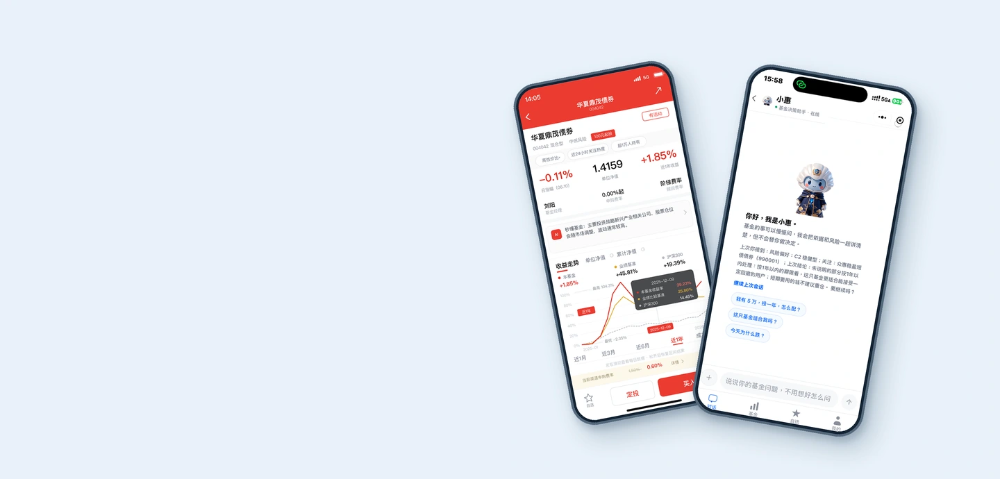
项目概览
初次接触基金的用户，要同时弄清术语、对比产品，还要判断风险。本次改版沿着开户、选基、看详情和决策的路径，梳理每一步需要的信息，再把小惠接入容易犹豫的关键场景。
01 调研与设计策略
把「看不懂、选不对、不敢判断」拆成页面上可处理的问题，优先改造影响判断的触点。
“这些数字是什么意思？”
用一句话解释基金特征，让收益、基准和风险信息更容易读懂。
“这么多，我该怎么选？”
用期限、风险等直观条件引导筛选，让结果可以比较，也可以返回调整。
“它到底适不适合我？”
把适用人群、判断依据和风险提示放在一起，帮助用户决定下一步。
以上问题为原稿中的用户场景归纳。
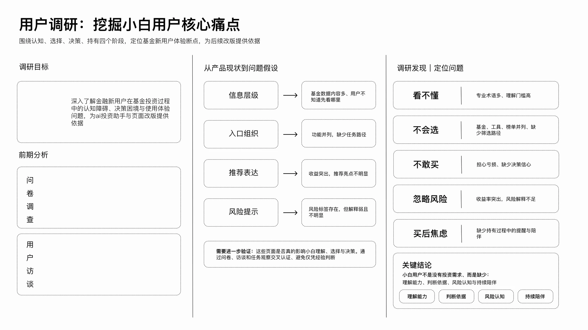
放大查看02 基金体验升级
改版前
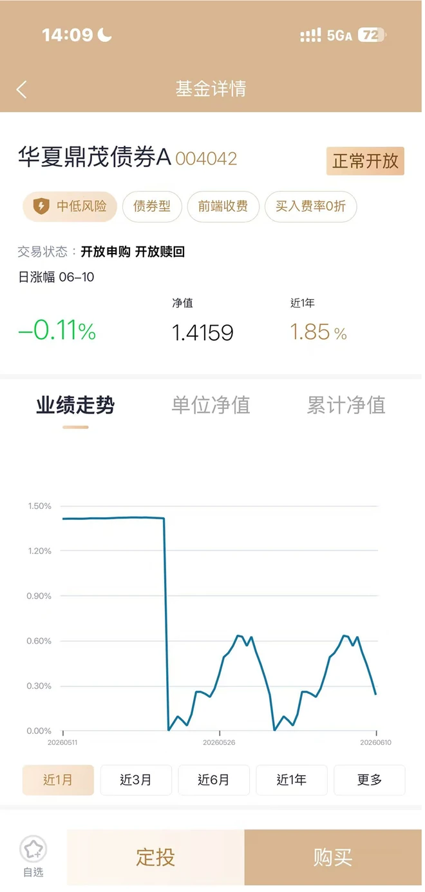
改版后
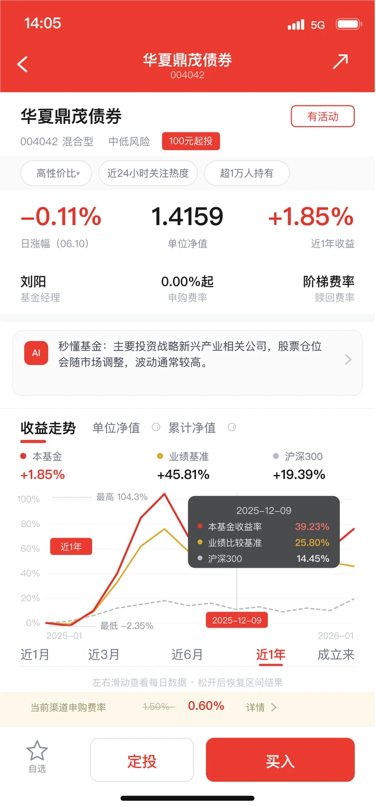
按用户做判断的顺序重排基金详情，把基金优势、收益比较和费用信息放到做决定时看得见的位置。
突出优势标签，用一句话说明基金特征。
并排展示收益数据，用曲线标记重要波动。
在买入操作附近前置渠道费率。
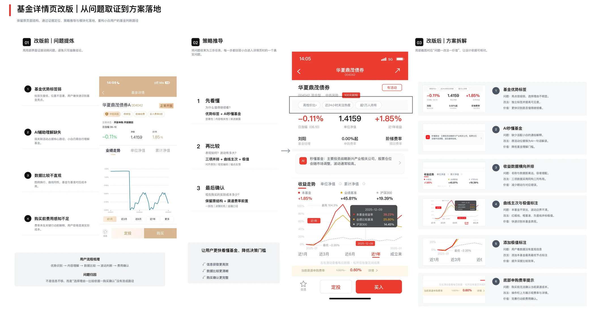
放大查看03 小惠 IP 与设计系统
在筛选犹豫、详情停留或持仓波动时轻量出现，点开即可提问，并带入当前场景。
将角色、色彩、信息卡片和提示状态统一起来，让小惠从基金页进入对话后依然容易识别。
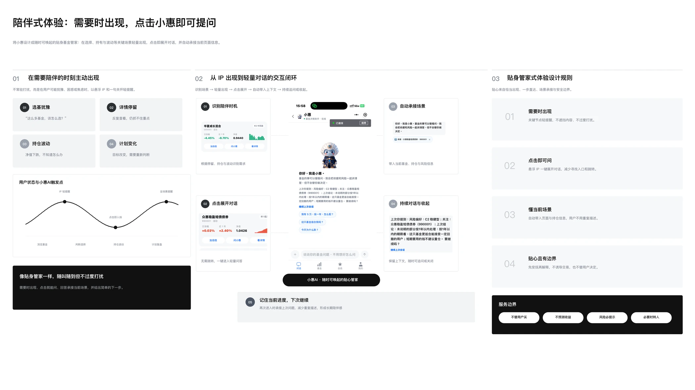
放大查看04 AI 智能投顾助手
以小惠为入口，支持智能问答、基金解读和风险陪伴，把复杂信息转成新手读得懂的判断依据。
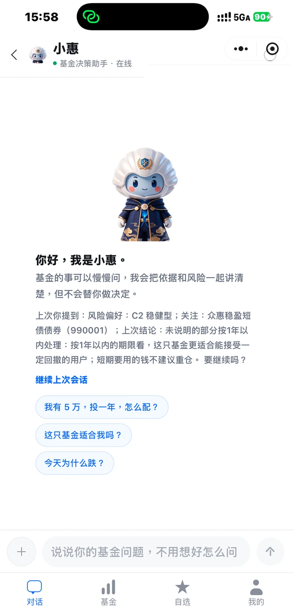
从自然语言中识别投资目标、期限和风险偏好，必要时补问关键信息。
通过 RAG 知识库检索基金资料和风险规则，为回答提供依据。
通过回复 Skill 组织判断、理由、风险和下一步建议，把决策权留给用户。
原型边界：提示风险，不承诺收益，不代替用户交易。
查看 Skill 与代码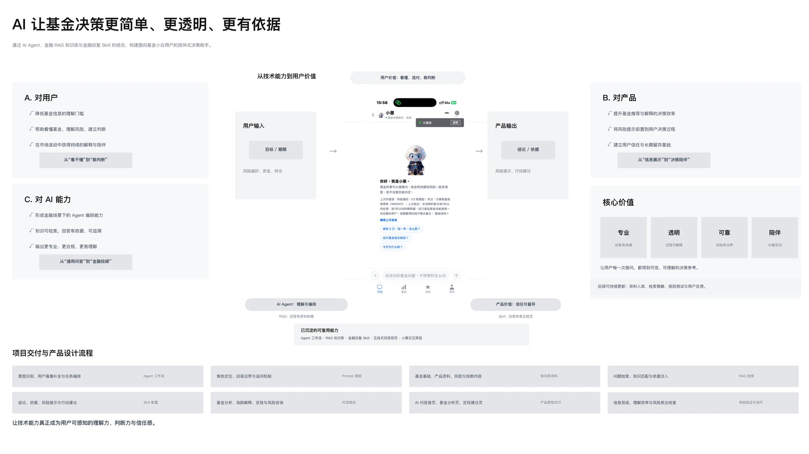
放大查看原型实现
Agent 识别意图并补全必要信息，金融 RAG 知识库检索可引用的资料，回复 Skill 再把依据和风险组织成用户看得懂的答案。
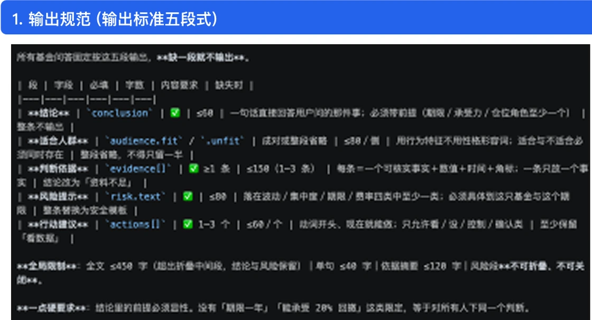
将角色边界、追问条件和回答格式写入规则。回答用新手熟悉的语言，说明判断依据和波动风险，保留可继续了解的下一步。
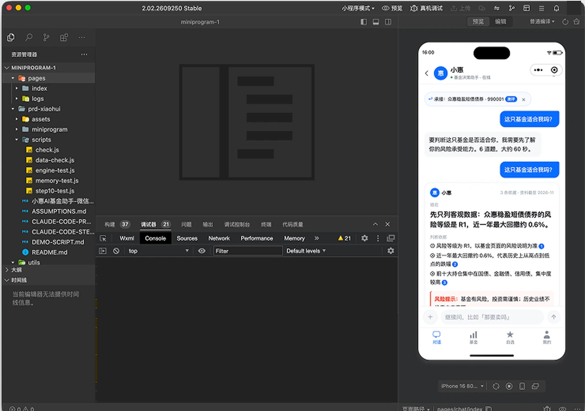
原稿记录了从小程序开发工具预览，到串联知识库与 Skill，再到多轮对话调试的过程。
对话验证覆盖基金适配、涨跌归因、定投和风险承受能力，记录异常回答并复测。
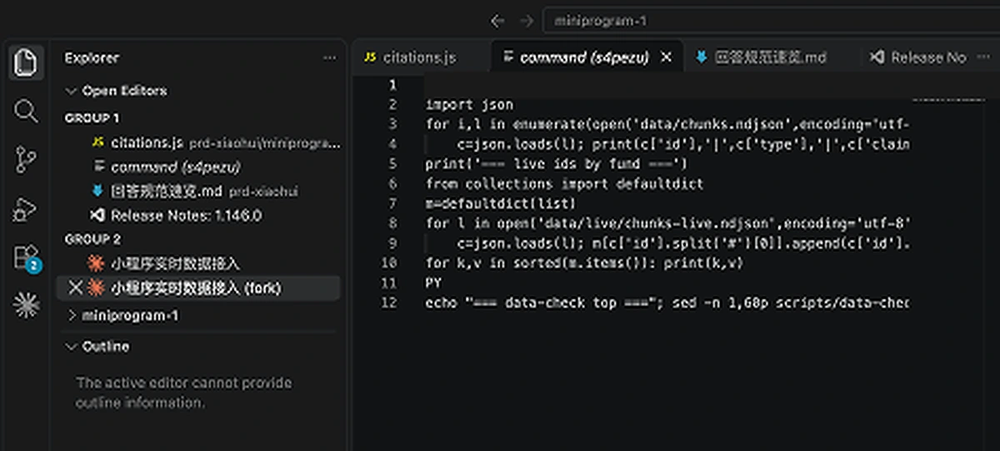
放大查看